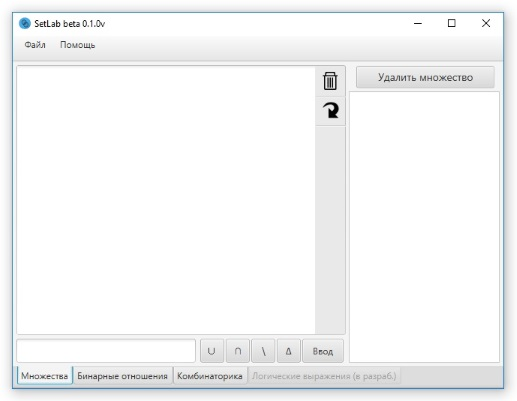
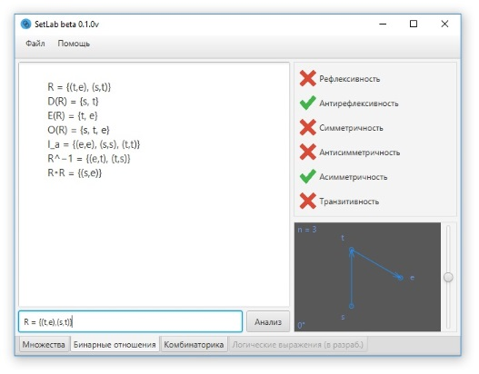
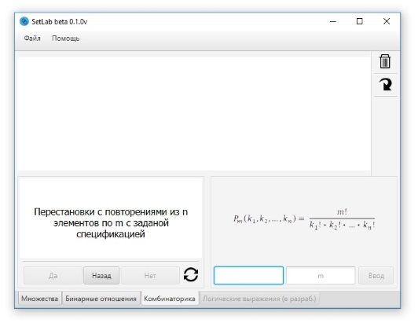

Множества
Раздел "Множества" представляет собой интерфейс
для вычисления и обработки множеств
Снизу, есть поле для ввода
1 - поле ввода, 2 - кнопки операций, 3 - кнопка ввода (можно просто нажать Enter)
Кнопки операций можно заменить нажатием сочитания клавиш Ctrl+ Q, W, E, или R
Cкопировать превидущее введенное выражение в поле ввода можнос с помощью Ctrl + UP
Справа находится таблица множеств, в которой хранятся множества
введенные пользователем
1 - кнопка задания множества, 2 - кнопка удаления множества

Бинарные Отношения
Раздел "Бинарные Отношения" представляет собой интерфейс
для анализа БО
Снизу есть поле для ввода
1 - поле ввода, 2 - кнопка ввода (заменяемая кнопкой Enter)
Справа снизу, есть монитор просмотра БО в виде графа
1 - окно отображения графа, 2 - слайдер поворота [-180°;180°]
где на рисунке n = кол-во элементов в БО
Так же, рисунок можно приближать и отдалять прокруткой колесика мыши
по окошку

Комбинаторика
Раздел "Комбинаторика" представляет собой интерфейс
для определения и вычисления комбинаторных функций
Снизу слева, есть блок с вопросами, по которому исходя
из комбинаторной конфигурации можно определить нужную формулу
Правее, есть блок ввода, где показана определенная формула
и есть 2 поля для ввода
Сверху, главное окно вывода, в котором будут выводится результаты вычеслений
